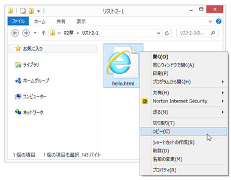
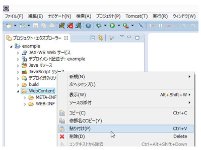
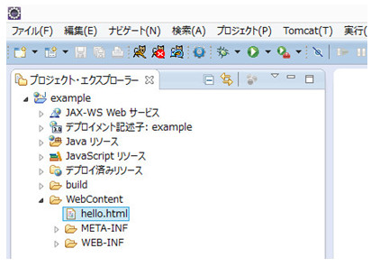
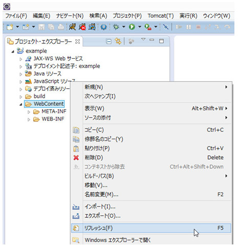
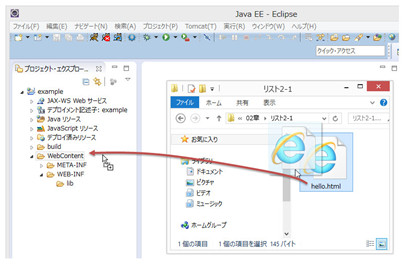

ファイルの取り込み方
取り込むファイルを選択しコピーします

取り込むディレクトリを選択し貼り付けます

選択したディレクトリにファイルが表示されるのを確認します

ファイルが表示されない場合は、貼り付けたディレクトリ（または動的Webプロジェクト）をリフレッシュ(右クリック→リフレッシュ）します

ファイルが表示されたら、サーバを再開（再起動）します
コピー＆ペースト以外にも、ドラッグ＆ドロップでも取り込むことができます

マニュアルトップへ戻る